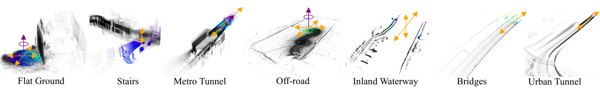
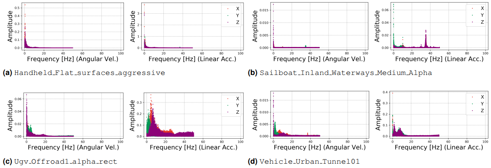
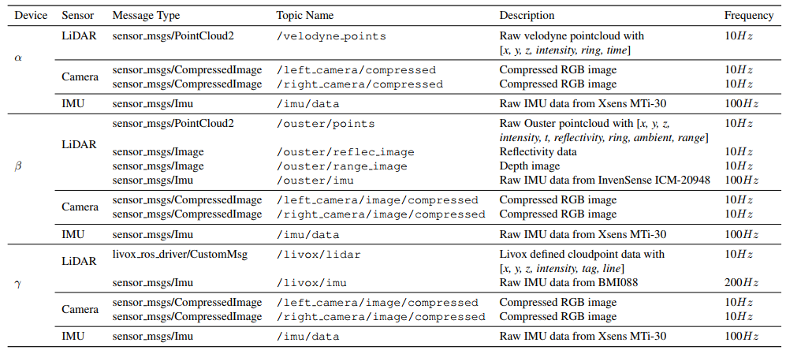

Heterogeneous LiDAR Dataset for Benchmarking Robust Localization in Diverse Degenerate Scenarios
Abstract
For robotic systems to achieve greater autonomy, advancements in 3D LiDAR SLAM are essential. Despite this, the majority of current public datasets do not adequately reflect environments with geometric degeneracy, which poses challenges for the development and testing of robust SLAM algorithms.
To address this limitation, we have developed GEODE, a dataset designed with diversity in mind, featuring multiple LiDAR sensors and various scenarios. GEODE offers 64 distinct trajectories that span more than 64 kilometers across seven different environments. The meticulous data collection process aimed to introduce real-world GEOmetric DEgeneracy and varying motion conditions, providing a robust testbed for SLAM methods. Our goal is for GEODE to enhance localization accuracy in geometrically complex settings and to drive future advancements in LiDAR-based SLAM technologies.
System Overview
GEODE is a groundbreaking dataset designed to enhance the development of LiDAR SLAM algorithms in challenging environments characterized by geometric degeneracy. This dataset stands out due to its incorporation of multiple sensor types and its versatility in operating across different scanning methods and fields of view. To achieve this, we have developed three distinct data acquisition systems, each utilizing a shared IMU and stereo camera but equipped with different LiDAR sensors. Our adaptable setup is designed for easy integration onto various platforms, enabling effective data collection in conditions that often hinder LiDAR-based SLAM performance, such as low geometric features, erratic motion dynamics, and fluctuating environmental factors.
Our FPGA-based time synchronization module enables multi-channel output for sensor synchronization.
Furthermore, the dataset includes accurate ground-truth trajectories for each data sequence, as well as ground-truth maps for selected indoor scenarios. The choice of equipment is tailored to the specific scene requirements: we utilize GNSS/INS-RTK for outdoor data collection, the Leica MS60 for indoor settings, Vicon vere2 for flat surface sequences, and the Leica RTC360 for generating ground-truth maps in stairway sequences.
Dataset
The GEODE dataset includes three essential attributes:
- Varied LiDAR Types: The GEODE dataset facilitates LiDAR-based localization with an array of sensors, including both rotating and non-repetitive LiDARs, offering diverse fields of view and scanning configurations.
- Multi-Degenerate Scenarios: This comprehensive dataset delves into an array of complex geometric scenarios such as flat surfaces, stairways, subway tunnels, rough off-road terrains, inland waterways, urban tunnels, and bridges. It offers valuable insights into the typical challenges encountered by LiDAR technologies and serves as a foundation for advancing algorithmic methods to address these issues. 
- Diverse Platform Characteristics: Data for the GEODE dataset were gathered using four distinct platforms: a handheld unit, an unmanned ground vehicle (UGV), a sailboat, and a traditional vehicle. Each platform contributes unique motion dynamics, enriching the dataset’s applicability. 
Scenarios
Metro Tunnels (Shield Method): This environment features smooth tunnel walls, presenting a highly uniform setting. Data collection aims to assess the sensor's performance in this geometrically repetitive and degenerate space.
Metro Tunnels (Mine Tunneling Method): Featuring uneven tunnel walls, this environment provides a more complex surface for data capture. The focus here is on how irregular shapes influence sensor readings compared to more regular environments.
Inland Waterways: Collecting data over water surfaces introduces challenges such as signal reflections and sparse feature points. The emphasis is on the sensor's performance amidst water-induced noise and absorption.
Off-road Terrain: A ground vehicle traverses a grassy track, collecting data at various speeds. This scenario examines the sensor's ability to handle natural, uneven terrain and the challenges of long-distance data acquisition.
Bridge: This scene, flanked by water on both sides, presents a uniform environment with repetitive features. Data collection highlights the difficulties in achieving accurate localization due to the lack of distinct landmarks.
Urban Tunnel: Data is collected in featureless urban tunnels, with challenges including dynamic moving vehicles and abrupt changes in lighting conditions. The focus is on the difficulties in scan matching within these low-texture environments.
Stairs: Data collection occurs in stairwells, which include both steps and walls. Different sensors were used to capture this confined space, focusing on the challenges of limited vertical field of view and the distinguishability of scans.

Flat Surfaces: In this scenario, a solid-state LiDAR captures the ground plane, observing movements ranging from slow to rapid. The sensor's perception is limited to a single flat surface due to its constrained field of view.
Data format
The GEODE dataset offers raw sensor data and corresponding ROS bag files. The raw data includes images, text files, and binary files for storing point clouds. The images comprise RGB data from a binocular camera, reflectivity images, and depth images from an Ouster radar. IMU data from the Xsens MTi-30 and the radar-integrated IMU are stored in text files, which include the following information: timestamp, roll, pitch, yaw, angular velocities, and linear accelerations. Point cloud data is sourced from Velodyne, Ouster, and other topics, and saved in binary files. Each file is timestamped and contains specific data for each sensor: Velodyne provides [x, y, z, intensity, ring, time]; Ouster includes [x, y, z, intensity, t, reflectivity, ring, ambient, range]; and Livox offers [x, y, z, intensity, tag, line]. For a comprehensive overview of the file structure in the GEODE dataset, please refer to the provided link.
- GEODE/(Click here to view the file structure of the GEODE dataset)
- sensor data
- map_env/sequence_id
- sequence_id.bag
- sequence_id.zip
- LiDAR
- bin
- timestamp.bin
- depth image*
- timestamp.jpg
- reflectivity image*
- timestamp.jpg
- Camera
- image_left
- timestamp.jpg
- iamge_right
- timestamp.jpg
- IMU
- imu.txt
- calibration files/
- device_id.yaml
- groundtruth/
- map
- map_env.las
- traj
- map_env.las
- sensor data
We present the ROS Topics along with explanations of each message as follows: 
Download
The dataset comprises raw data, ground truth poses, ground truth maps, and corresponding ROS bag files. These files are accessible for download from Google Drive. For specific sequence downloads of ROS bag files, please refer to the table below. Additional download options will be made available in the future.
| Flat_Surfaces_Smooth | γ(Handheld) | 770.5 MB | 82s | 27.77m | Hard | Rosbag |
| Flat_Surfaces_Aggressive | γ(Handheld) | 799.9 MB | 88s | 80.52m | Hard | Rosbag |
| Stairs_Alpha | α(Handheld) | 3.7 GB | 345s | 301.06m | Medium | Rosbag |
| Stairs_Beta | β(Handheld) | 11.0 GB | 331s | 300.15m | Easy | Rosbag |
| Stairs_Gamma | γ(Handheld) | 2.9 GB | 390s | 300m | Medium | Rosbag |
| Shield_tunnel1_gamma | γ(Handheld) | 4.2 GB | 542s | 691.85 m | Hard | Rosbag |
| Shield_tunnel2_gamma | γ(Handheld) | 3.5 GB | 447s | 673.76 m | Hard | Rosbag |
| Shield_tunnel3_gamma | γ(Handheld) | 2.7 GB | 338s | 586.76 m | Hard | Rosbag |
| Shield_tunnel4_gamma | γ(Handheld) | 2.7 GB | 340s | 501.44 m | Hard | Rosbag |
| Shield_tunnel5_gamma | γ(Handheld) | 2.0 GB | 251s | 201.32 m | Hard | Rosbag |
| Shield_tunnel6_gamma | γ(Handheld) | 1.8 GB | 224s | 205.20 m | Hard | Rosbag |
| Shield_tunnel7_beta | β(Handheld) | 18.1 GB | 516s | 602.24 m | Hard | Rosbag |
| Shield_tunnel8_beta | β(Handheld) | 20.4 GB | 518s | 708.28 m | Hard | Rosbag |
| Shield_tunnel9_beta | β(Handheld) | 13.2 GB | 373s | 525.66 m | Hard | Rosbag |
| Shield_tunnel10_beta | β(Handheld) | 16.4 GB | 464s | 632.99 m | Hard | Rosbag |
| Tunneling_tunnel1_gamma | γ(UGV) | 1.7 GB | 208s | 188.31 m | Easy | Rosbag |
| Tunneling_tunnel2_alpha | α(UGV) | 3.6 GB | 282s | 155.48 m | Easy | Rosbag |
| Tunneling_tunnel2_beta | β(UGV) | 9.8 GB | 284s | 155.48 m | Easy | Rosbag |
| Tunneling_tunnel2_gamma | γ(UGV) | 2.2 GB | 261s | 155.48 m | Easy | Rosbag |
| Tunneling_tunnel3_alpha | α(UGV) | 3.2 GB | 252s | 182.51 m | Easy | Rosbag |
| Tunneling_tunnel3_beta | β(UGV) | 9.1 GB | 255s | 182.51 m | Easy | Rosbag |
| Tunneling_tunnel3_gamma | γ(UGV) | 2.1 GB | 254s | 182.51 m | Easy | Rosbag |
| Tunneling_tunnel4_alpha | α(UGV) | 2.7 GB | 212s | 206.96 m | Easy | Rosbag |
| Tunneling_tunnel4_beta | β(UGV) | 8.3 GB | 231s | 206.96 m | Easy | Rosbag |
| Tunneling_tunnel4_gamma | γ(UGV) | 1.9 GB | 223s | 206.96 m | Easy | Rosbag |
| Tunneling_tunnel5_alpha | α(UGV) | 3.3 GB | 244s | 150.65 m | Easy | Rosbag |
| Tunneling_tunnel5_beta | β(UGV) | 8.0 GB | 223s | 150.65 m | Easy | Rosbag |
| Tunneling_tunnel5_gamma | γ(UGV) | 2.0 GB | 232s | 150.65 m | Easy | Rosbag |
| Inland_Waterways_Short_Alpha | α(Sailboat) | 4.8 GB | 472s | 624.62 m | Easy | Rosbag |
| Inland_Waterways_Medium_Alpha | α(Sailboat) | 9.2 GB | 876s | 1883.72 m | Medium | Rosbag |
| Inland_Waterways_Long_Alpha | α(Sailboat) | 16.8 GB | 1616s | 2781.19 m | Hard | Rosbag |
| Inland_Waterways_Short_Beta | β(Sailboat) | 14.9 GB | 441s | 624.62 m | Easy | Rosbag |
| Inland_Waterways_Medium_Beta | β(Sailboat) | 27.6 GB | 812s | 1883.72 m | Medium | Rosbag |
| Inland_Waterways_Long_Beta | β(Sailboat) | 54.7 GB | 1615s | 2781.19 m | Hard | Rosbag |
| Inland_Waterways_Short_Gamma | γ(Sailboat) | 3.0 GB | 475s | 624.62 m | Easy | Rosbag |
| Inland_Waterways_Medium_Gamma | γ(Sailboat) | 5.5 GB | 838s | 1883.72 m | Medium | Rosbag |
| Inland_Waterways_Long_Gamma | γ(Sailboat) | 10.8 GB | 1656s | 2781.19 m | Hard | Rosbag |
| Offroad1_alpha | α(UGV) | 4.6 GB | 426s | 439.81 m | Medium | Rosbag |
| Offroad1_beta | α(UGV) | 14.5 GB | 418s | 439.81m | Medium | Rosbag |
| Offroad1_gamma | γ(UGV) | 3.0 GB | 484s | 439.81m | Medium | Rosbag |
| Offroad2_alpha | α(UGV) | 4.6 GB | 427s | 680.39m | Medium | Rosbag |
| Offroad2_beta | β(UGV) | 14.9 GB | 432s | 680.39m | Medium | Rosbag |
| Offroad2_gamma | γ(UGV) | 3.0 GB | 421s | 680.39m | Medium | Rosbag |
| Offroad3_alpha | α(UGV) | 3.2 GB | 302s | 469.66m | Medium | Rosbag |
| Offroad3_beta | β(UGV) | 11.2 GB | 326s | 469.66m | Medium | Rosbag |
| Offroad3_gamma | γ(UGV) | 2.3 GB | 322s | 469.66m | Medium | Rosbag |
| Offroad4_alpha | α(UGV) | 4.7 GB | 445s | 751.78m | Medium | Rosbag |
| Offroad4_beta | β(UGV) | 14.7 GB | 428s | 751.78m | Medium | Rosbag |
| Offroad4_gamma | γ(UGV) | 2.9 GB | 403s | 751.78m | Medium | Rosbag |
| Offroad5_alpha | α(UGV) | 5.4 GB | 506s | 838.19m | Medium | Rosbag |
| Offroad5_beta | β(UGV) | 16.5 GB | 480s | 838.19m | Medium | Rosbag |
| Offroad5_gamma | γ(UGV) | 3.4 GB | 478s | 838.19m | Medium | Rosbag |
| Offroad6_alpha | α(UGV) | 4.9 GB | 455s | 455.48m | Medium | Rosbag |
| Offroad6_beta | β(UGV) | 14.3 GB | 416s | 455.48m | Medium | Rosbag |
| Offroad6_gamma | γ(UGV) | 3.1 GB | 437s | 455.48m | Medium | Rosbag |
| Offroad7_alpha | α(UGV) | 2.4 GB | 219s | 302.03m | Medium | Rosbag |
| Offroad7_beta | β(UGV) | 6.3 GB | 183s | 302.03m | Medium | Rosbag |
| Offroad7_gamma | γ(UGV) | 1.3 GB | 184s | 302.03m | Medium | Rosbag |
| Urban_Tunnel01 | α(Vehicle) | 3.2 GB | 285s | 3202.21 m | Hard | Rosbag |
| Urban_Tunnel02 | α(Vehicle) | 3.8 GB | 342s | 4747.11 m | Hard | Rosbag |
| Urban_Tunnel03 | α(Vehicle) | 3.6 GB | 334s | 6748.56 m | Hard | Rosbag |
| Bridge01 | α(Vehicle) | 4.1 GB | 382s | 3968.86 m | Hard | Rosbag |
| Bridge02 | α(Vehicle) | 4.8 GB | 472s | 7678.28 m | Hard | Rosbag |
| Bridge03 | α(Vehicle) | 3.4 GB | 320s | 5023.20 m | Hard | Rosbag |
The dataset is available on Google Drive
Data Sequences
Standard Trajectories
flat_surfaces
flat_surfaces_smooth trajectory
flat_surfaces_aggressive trajectory
Shield_tunnel
Shield_tunnel1 trajectory
Shield_tunnel2 trajectory
Shield_tunnel3 trajectory
Shield_tunnel4 trajectory
Shield_tunnel5 trajectory
Shield_tunnel6 trajectory
Shield_tunnel7 trajectory
Shield_tunnel8 trajectory
Shield_tunnel9 trajectory
Shield_tunnel10 trajectory
bridge
bridge1 trajectory
bridge2 trajectory
bridge3 trajectory
Urban_Tunnel
Urban_Tunnel1 trajectory
Urban_Tunnel2 trajectory
Urban_Tunnel3 trajectory
Co-captured Trajectories
Tunneling_tunnel
Tunneling_tunnel1 trajectory
Tunneling_tunnel2 trajectory
Tunneling_tunnel3 trajectory
Tunneling_tunnel4 trajectory
Tunneling_tunnel5 trajectory
Inland_Waterways
Inland_Waterways_Long trajectory
Inland_Waterways_Medium trajectory
Inland_Waterways_Short trajectory
Offroad
Offroad1 trajectory
Offroad2 trajectory
Offroad3 trajectory
Offroad4 trajectory
Offroad5 trajectory
Offroad6 trajectory
Offroad7 trajectory
Online Benchmark
 Mono: Method uses left or right images
Mono: Method uses left or right images- Stereo: Method uses left and right (stereo) images
- Laser Points: Method uses point clouds from laser scanner
- IMU: Method uses IMU data
| Submission Date | Method | Setting | Code | Error Report | Environment |
|---|---|---|---|---|---|
| 1/4/2025 | COIN-LIO° | Code | Report | 6 cores @ 4.6 Ghz (C/C++) | |
| 1/4/2025 | FAST-LIVO° |
|
Code | Report | 6 cores @ 4.6 Ghz (C/C++) |
| 1/4/2025 | FAST-LIO2° | Code | Report | 6 cores @ 4.6 Ghz (C/C++) | |
| 1/4/2025 | DLIO° | Code | Report | 6 cores @ 4.6 Ghz (C/C++) | |
| 1/4/2025 | Coco_LIC° |
|
Code | Report | 6 cores @ 4.6 Ghz (C/C++) |
| 1/4/2025 | R3LIVE° |
|
Code | Report | 6 cores @ 4.6 Ghz (C/C++) |
| 1/4/2025 | LVI-SAM° |
|
Code | Report | 6 cores @ 4.6 Ghz (C/C++) |
| 1/4/2025 | LIO-SAM° | Code | Report | 6 cores @ 4.6 Ghz (C/C++) |
Citation
@misc{chen2024heterogeneouslidardatasetbenchmarking,
title={Heterogeneous LiDAR Dataset for Benchmarking Robust Localization in Diverse Degenerate Scenarios},
author={Zhiqiang Chen and Yuhua Qi and Dapeng Feng and Xuebin Zhuang and Hongbo Chen and Xiangcheng Hu and Jin Wu and Kelin Peng and Peng Lu},
year={2024},
eprint={2409.04961},
archivePrefix={arXiv},
primaryClass={cs.RO},
url={https://arxiv.org/abs/2409.04961},
}